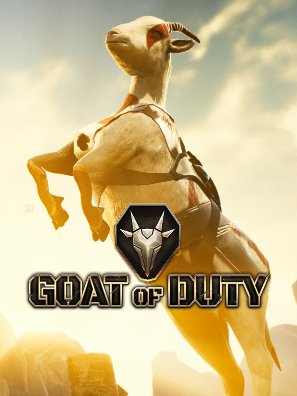

GOAT OF DUTY
GOAT OF DUTY
Detalhes
 |
|
| Tempo de jogo | Não Jogado |
| Última Atividade | Nunca |
| Adicionado | 07/06/2026 0:35:51 |
| Modificado | 07/06/2026 2:31:10 |
| Status de Conclusão | Not Played |
| Biblioteca | Steam |
| Fonte | Steam |
| Plataforma | PC (Windows) |
| Data de Lançamento | 10/07/2019 |
| Pontuação da Comunidade | 70 |
| Avaliação da crítica | |
| Pontuação do Usuário | |
| Gênero | |
| Desenvolvedor | 34BigThings |
| Editor | Raiser Games |
| Funções | Multiplayer Single Player |
| Links | Steam Official Website Twitch YouTube |
| Tag | |
Descrição
Na escuridão sombria de um futuro distante, existem apenas cabras.
Certo dia, depois de um acidente nuclear bizarro, todas as cabras se tornaram inteligentes e logo derrubaram seus donos humanos com suas investidas poderosas, saltos altos e balidos ensurdecedores. Não, calma aí, não foi assim. As cabras eram inteligentes desde o início, mas, por não terem polegares opositores, estavam esperando pacientemente que a humanidade desenvolvesse robôs automatizados capazes de produzir o que precisavam pra.... Espera, isso também não funciona. Em um universo alternativo, as cabras são as mais poderosas guerreiras do...

Goat of Duty é um jogo de tiro em primeira pessoa de ritmo acelerado e intenso, e basicamente isso é tudo o que você precisa saber. Rápido e prático: você não precisa dominar um metajogo complexo, conhecer diferentes personagens, combinar habilidades, jogar em equipe com estratégia... é só a boa e cruel arena de combate, com armas poderosas e ação super-rápida. Bom, e muito humor besta, caprigurinos doidões (visuais) e uma mecânica maneira pra você trollar seus camaradas depois de pisar no cadáver humilhado deles!
Certo dia, depois de um acidente nuclear bizarro, todas as cabras se tornaram inteligentes e logo derrubaram seus donos humanos com suas investidas poderosas, saltos altos e balidos ensurdecedores. Não, calma aí, não foi assim. As cabras eram inteligentes desde o início, mas, por não terem polegares opositores, estavam esperando pacientemente que a humanidade desenvolvesse robôs automatizados capazes de produzir o que precisavam pra.... Espera, isso também não funciona. Em um universo alternativo, as cabras são as mais poderosas guerreiras do...
Goat of Duty é um jogo de tiro em primeira pessoa de ritmo acelerado e intenso, e basicamente isso é tudo o que você precisa saber. Rápido e prático: você não precisa dominar um metajogo complexo, conhecer diferentes personagens, combinar habilidades, jogar em equipe com estratégia... é só a boa e cruel arena de combate, com armas poderosas e ação super-rápida. Bom, e muito humor besta, caprigurinos doidões (visuais) e uma mecânica maneira pra você trollar seus camaradas depois de pisar no cadáver humilhado deles!
- Cabras. Você é uma cabra armada até os chifres lutando contra outras cabras. Não dá pra ser melhor que isso!
- Uma experiência de batalhas intensas multijogador mata-mata de 10 cabras
- Jogabilidade em ritmo superacelerado: afinal de contas, as cabras são rápidas e ágeis, capazes de subir em praticamente qualquer coisa e saltar bem alto
- Experiência de tiro prática das antigas: é você e suas próprias habilidades contra os inimigos!
- Vista caprigurinos malucos, dance como uma cabra e trolle seus camaradas soltando balidos de combate!
- Quatro modos multiplayer: Free-for-all clássico, fúria das cabras, guerras de rebanho (team deathmatch para os humanos) e um novo modo original: o insano Fus Ro Arena
- Explore uma porrada de mapas malucos com diferentes estilos de jogo: encarne uma cabra em casa numa fazenda futurista, explore montanhas espaciais, sobreviva no deserto dos cordeiros, sinta o medo no poço dos horrores ou no matadouro, perca o rumo na estação espacial e descubra que p@$& é essa na aldeia medieval e no poço dos horrores, entre outros!